HYD · 실습 가이드기준 설비 지식의 실제 연결 구조 확인하기
관계 조회 실습에서는 Neo4j Browser의 설비 예제에서 주 펌프 → 펌프 축 씰 키트로 이어지는 교체 부품 경로를 조회했습니다. 이번에는 포털의 지식 지도에서 같은 씰 키트를 찾아, 어떤 설비와 문서에 이어져 있는지 따라갑니다. 그리고 그 연결만 보고 판단할 수 있는 것과 업무 시스템에서 따로 확인해야 하는 것을 구분합니다. 줄기 단계 가운데 온톨로지 단계입니다.
01 지식 지도 열기
| 목표 | 설비 · 구성 요소 · 부품 · 문서의 연결을 펼쳐 식별정보와 관계 방향을 읽고, 한 부품을 쓰는 설비를 찾습니다. |
|---|
| 입력 | 포털 지식 지도의 수업 기준 지식. 포털 데이터를 바꾸는 조작은 하지 않고 보기만 합니다. |
|---|
| 할 일 | 설비 → 주 펌프 → 토출 압력 센서 → 씰 키트 → 설비 HYD-02 · HYD-03 → 발주 방법 → 매뉴얼 절 → 구매 기준 문서 → 공급사 → 씰 키트 가용 재고를 차례로 엽니다. |
|---|
| 성공 기준 | 씰 키트를 쓰는 설비 범위와 살 수 있는 공급사 · 근거 문서는 지도에서 짚고, 지금 재고 · 단가 · 납기는 지도 밖 업무 시스템에서 따로 봐야 한다는 것을 근거 화면과 함께 말할 수 있습니다. |
|---|
포털을 열고 왼쪽 메뉴에서 지식 지도를 누르세요. 세로 칸 하나가 지식의 한 층이고, 칸 안의 작은 회색 머리글이 클래스, 그 아래 노드 하나하나가 인스턴스입니다. 노드를 누르면 지도 아래 상세 칸에 종류, 이름, 속성, 나가는 관계와 들어오는 관계가 나옵니다. 위쪽 설비 칸은 HYD-01입니다.
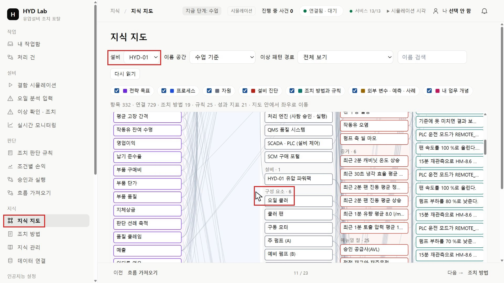
왼쪽 메뉴의 지식 지도, 설비 칸의 HYD-01, 자원 칸의 클래스 머리글 구성 요소 · 6 · 누르면 크게 보기확인 설비 칸이 HYD-01이고, 자원 칸에서 구성 요소 머리글과 그 아래 노드를 찾을 수 있습니다.
02 설비에서 주 펌프와 센서로 내려가기
목적 설비에서 구성 요소, 센서로 내려가며 노드마다 식별정보를 짚습니다. 입력 설비 칸의 HYD-01.
이름 검색 칸에 유압 파워팩을 넣고, 지도의 설비 머리글 아래 노랗게 표시된 HYD-01 유압 파워팩을 누른 뒤 상세 칸으로 내려가세요.
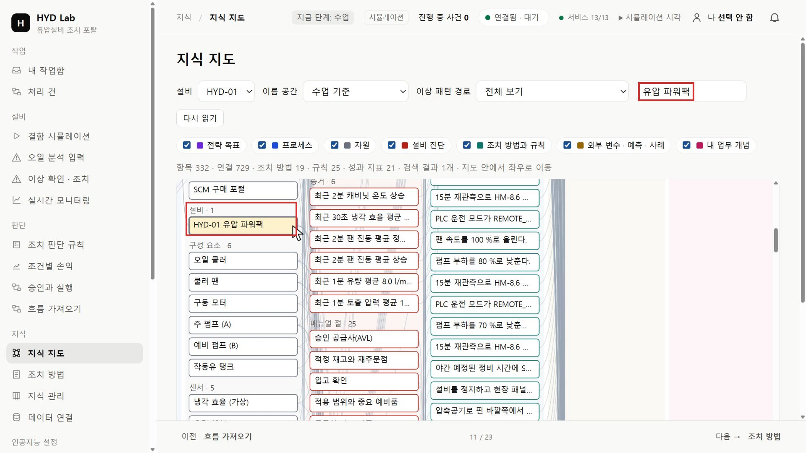
이름 검색 칸의 유압 파워팩. 그 아래 지도에서 노란 HYD-01 유압 파워팩을 누릅니다 · 누르면 크게 보기종류는 설비이고, code 칸(설비 코드)의 HYD-01이 식별정보입니다. 나가는 관계에 구성 요소 여섯 개가 있습니다. 씰 키트를 쓰는 주 펌프 (A)를 누르세요.
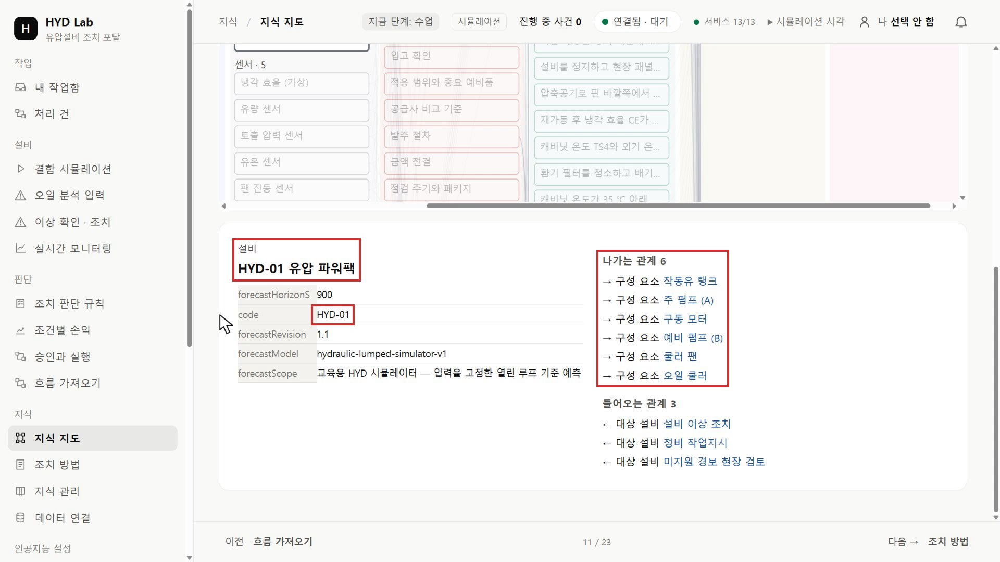
설비 상세: 종류 · 이름, code HYD-01, 나가는 관계의 구성 요소 6 · 누르면 크게 보기종류는 구성 요소입니다. 들어오는 관계의 구성 요소 HYD-01 유압 파워팩은 설비에서 펌프로 들어오는 방향입니다. 나가는 관계에는 교체 부품과 구동 장치가 하나씩, 관측 센서가 둘 있습니다. 토출 압력 센서를 누르세요.
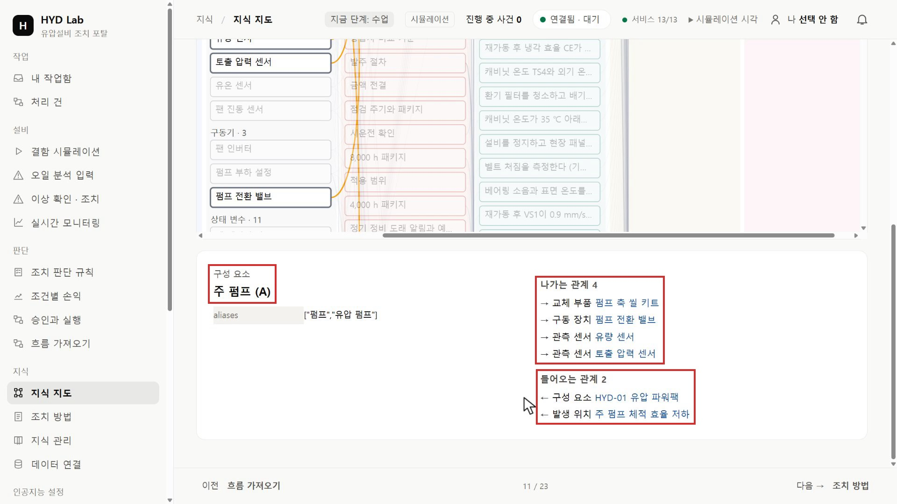
주 펌프 (A) 상세: 나가는 관계 4와 들어오는 관계 2 · 누르면 크게 보기종류는 센서이고, tag 칸(태그)의 PS1이 식별정보입니다. unit 칸(단위)은 bar, virtual 칸(가상 여부)은 false이니 펌프에 실제로 달린 압력계입니다. 들어오는 관계의 주 펌프 (A)를 눌러 돌아가세요.
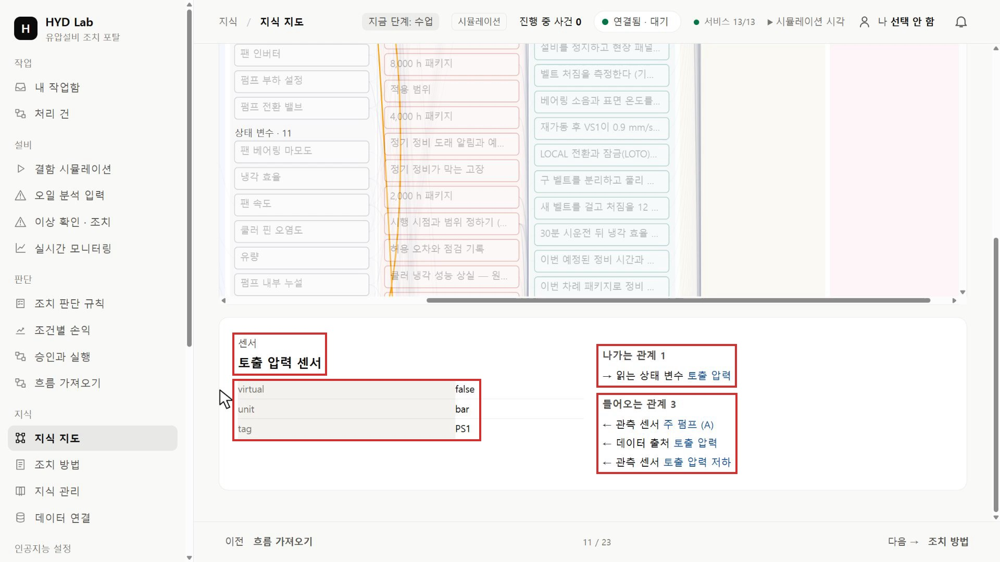
토출 압력 센서 상세: virtual false · unit bar · tag PS1, 들어오는 관계의 주 펌프 (A) · 누르면 크게 보기확인 설비 → 주 펌프 (A) → 토출 압력 센서로 내려가며, 설비는 code, 센서는 tag가 식별정보임을 짚을 수 있습니다. 상세 칸이 보이지 않으면 화면을 지도 아래로 내립니다.
03 씰 키트의 식별정보와 관계 읽기
목적 부품 노드 하나에 모인 연결을 출발점부터 읽습니다. 입력 02에서 돌아온 주 펌프 (A) 상세.
주 펌프 (A) 상세에서 교체 부품 펌프 축 씰 키트를 누르세요. 종류는 부품이고, partNo 칸(품번)의 P-PMP-SEAL이 식별정보입니다. 구매 요청서나 재고 장부에서 이 부품을 찾는 열쇠가 품번이고, 같은 이름의 씰이 여럿이어도 품번이 같아야 같은 부품입니다.
들어오는 관계를 출발점부터 읽으면, 주 펌프 (A)의 교체 부품이 이 씰 키트이고, 펌프 축 씰 마모라는 원인과 발주 조치 방법들도 관련 부품으로 이 씰 키트를 가리킵니다. 나가는 관계에는 공급사 셋(B-OEM (순정), A정밀 (저가), C트레이딩 (최저가))이 있습니다. 어느 장치에 쓰이는지, 어떤 원인과 이어지는지, 어떤 발주 방법이 다루는지, 어디서 살 수 있는지가 이 부품 노드 하나에 모여 있습니다.
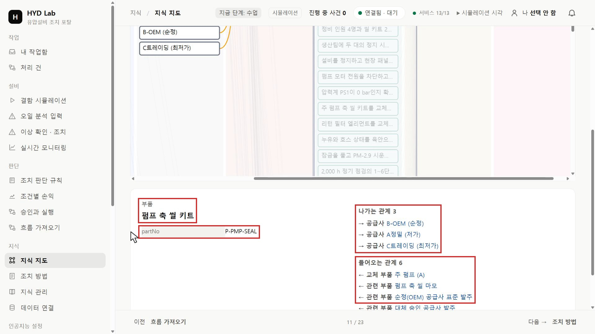
펌프 축 씰 키트 상세: 종류 부품, partNo P-PMP-SEAL, 나가는 관계의 공급사 셋, 들어오는 관계 6 · 누르면 크게 보기확인 씰 키트의 품번 P-PMP-SEAL, 들어오는 관계 6, 나가는 공급사 3을 상세 칸에서 짚을 수 있습니다. 들어오는 관계 여섯 줄이 상세 칸 아래로 이어져 다 보이지 않으면 화면을 조금 더 내립니다.
04 씰 키트를 쓰는 설비 찾기
목적 이 부품에 기대는 설비의 범위를 찾습니다. 입력 03에서 연 펌프 축 씰 키트 상세.
들어오는 관계의 주 펌프 (A)를 누르면, 주 펌프의 들어오는 관계에 HYD-01 유압 파워팩 하나만 보입니다. 지도는 위에서 고른 설비 하나만 그리기 때문입니다.
화면을 올려 설비 칸에서 HYD-02를 고르고, 지도의 자원 칸 구성 요소 아래 주 펌프 (A)를 누른 뒤 상세 칸으로 내려가세요.
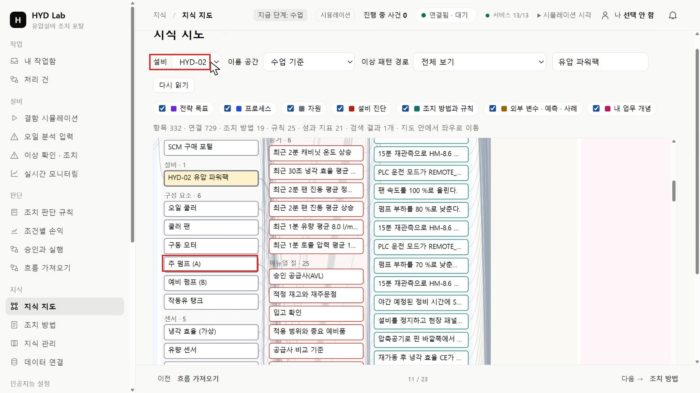
설비 칸에서 HYD-02를 고른 모습. 그 아래 지도의 구성 요소 · 6 아래에서 주 펌프 (A)를 누릅니다 · 누르면 크게 보기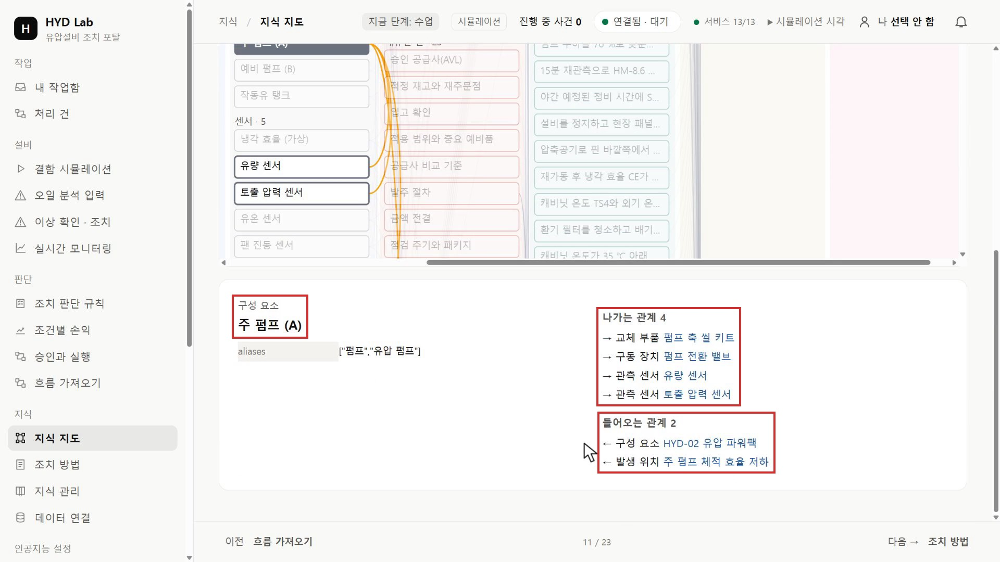
HYD-02에서 연 주 펌프 (A) 상세: 들어오는 관계의 구성 요소 HYD-02 유압 파워팩, 나가는 관계의 교체 부품 펌프 축 씰 키트 · 누르면 크게 보기같은 방법으로 설비 칸에서 HYD-03을 고르고 주 펌프 (A)를 다시 누르세요. HYD-03 유압 파워팩이 들어오고, 교체 부품도 같은 씰 키트입니다.
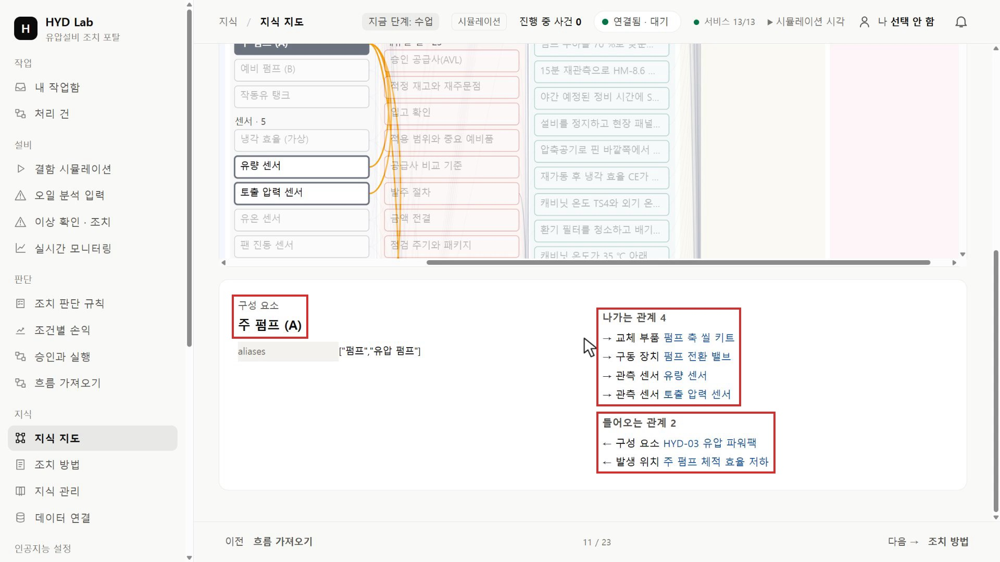
HYD-03에서 연 주 펌프 (A) 상세: 들어오는 관계의 HYD-03 유압 파워팩 · 누르면 크게 보기확인 세 설비가 같은 주 펌프 노드를 가리키고 그 펌프가 이 씰 키트를 씁니다. 씰 키트의 재고나 공급에 문제가 생기면 세 설비가 함께 영향을 받습니다. 부품 담당이 이 지도에서 바로 얻는 정보가 이 부품에 기대는 설비의 범위입니다. 설비를 바꾸면 앞에서 누른 노드의 선택이 풀려 상세 칸이 사라집니다. 지도의 구성 요소 아래 주 펌프 (A)를 다시 눌러 상세를 엽니다.
05 발주 방법에서 근거 문서와 규칙까지 따라가기
목적 발주 방법이 어느 문서의 어느 절에 근거하는지 따라갑니다. 입력 04에서 HYD-03으로 바꾼 지도의 주 펌프 (A) 상세.
주 펌프 (A) 상세에서 펌프 축 씰 키트를 누르고, 들어오는 관계의 순정(OEM) 공급사 표준 발주를 누르세요. 종류는 조치 방법입니다. 들어오는 관계에는 적용 대상이라는 관계로 규칙 넷이 이 발주 방법을 가리킵니다. 리드타임이 필요일보다 길면 경고를 달고, 금액이 전결 기준을 넘으면 표시하고, 불량률이 10 %를 넘으면 전수 검사를 더하고, 승인되지 않은 공급사는 쓰지 않는다는 규칙입니다. 이 규칙들이 볼 납기와 금액, 불량률은 공급사마다 다른 견적 값입니다. 속성 표의 영어 칸들은 몰라도 되고, 볼 곳은 오른쪽 관계입니다.
나가는 관계에는 절차 단계 다섯 개와 관련 부품 셋, 승인 역할 구매 담당이 있습니다. 절차 단계 가운데 「발주 수량을 목표 재고 − 가용 재고로 정하고 …」를 누르세요. 목록의 맨 위가 아니라 여섯째 줄에 있습니다.
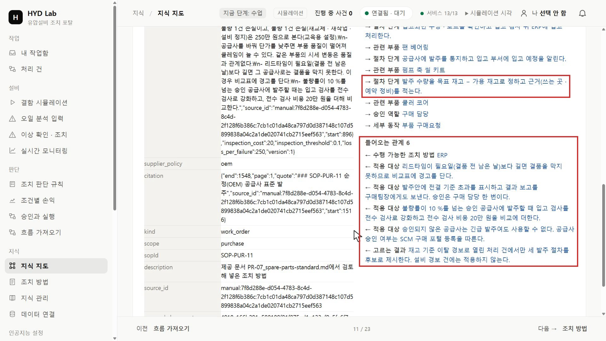
순정(OEM) 공급사 표준 발주 상세: 나가는 관계의 절차 단계 「발주 수량을 …」와 들어오는 관계의 적용 대상 규칙 넷 · 누르면 크게 보기절차 단계 상세의 나가는 관계에서 근거 매뉴얼 발주 절차를 누르세요.
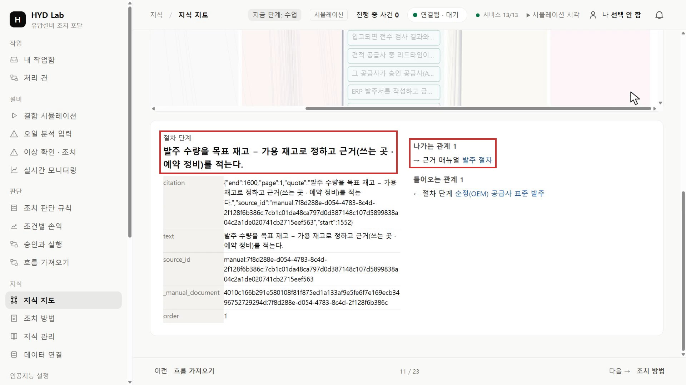
절차 단계 상세: 나가는 관계의 근거 매뉴얼 발주 절차 · 누르면 크게 보기종류는 매뉴얼 절이고 ref 칸(문서 안 절 번호)은 PR-7.6입니다. 나가는 관계의 속한 문서가 구매 기준 문서이고, 화면에는 파일 이름 PR-07_spare-parts-standard.md로 보입니다. 발주 방법이 어느 문서의 어느 절에서 나왔는지가 선으로 이어져 있어 근거를 원문까지 거슬러 갈 수 있습니다. 이 속한 문서를 누르세요.
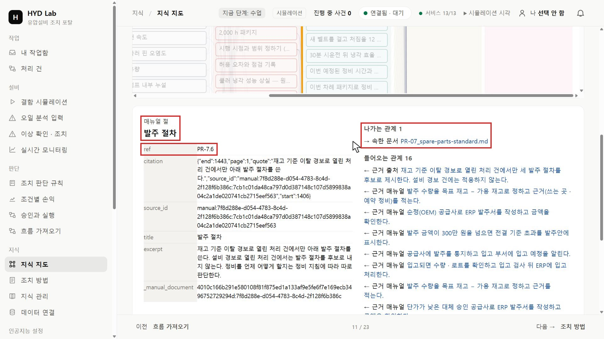
매뉴얼 절 발주 절차 상세: ref(절 번호) PR-7.6과 나가는 관계의 속한 문서 · 누르면 크게 보기종류는 지식 출처입니다. 들어오는 관계에는 이 문서의 절 일곱 개가 속한 문서로 이어져 있습니다. 그중 승인 공급사(AVL)를 누르세요.
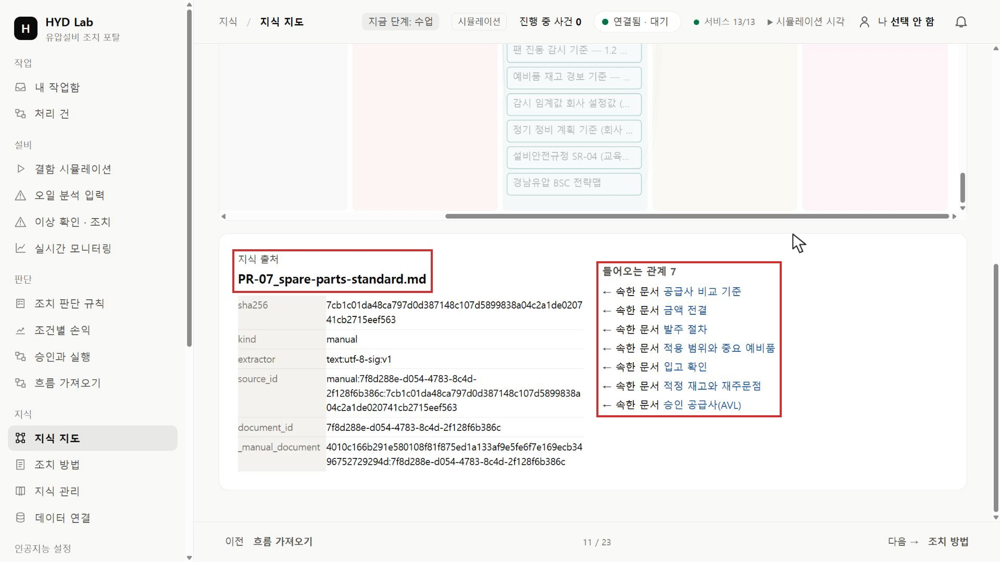
지식 출처 PR-07_spare-parts-standard.md 상세: 들어오는 관계의 절 일곱 · 누르면 크게 보기이 절의 들어오는 관계에 근거 출처로 규칙 하나가 이어져 있습니다. 승인되지 않은 공급사는 긴급 발주여도 사용할 수 없고, 공급사 승인 여부는 SCM 구매 포털 등록을 따른다는 규칙입니다.
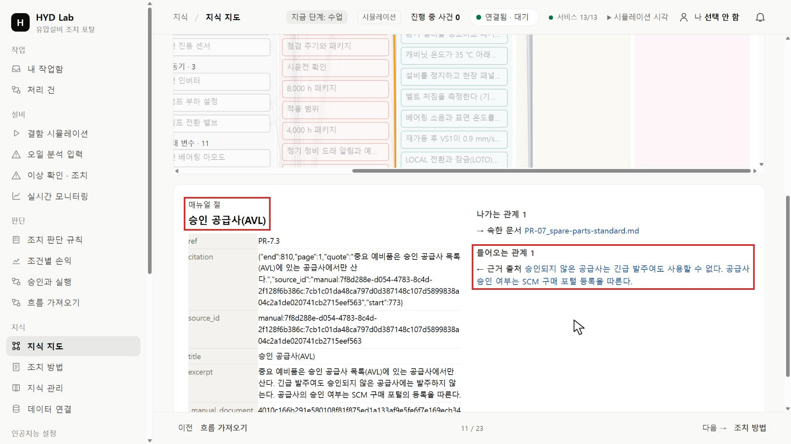
매뉴얼 절 승인 공급사(AVL) 상세: 들어오는 관계의 근거 출처 규칙 · 누르면 크게 보기확인 씰 키트 → 발주 방법 → 절차 단계 → 매뉴얼 절 발주 절차 → 구매 기준 문서 → 승인 공급사(AVL) 절 ← 규칙으로, 공급사의 승인 여부로 발주 후보를 빼는 판단의 근거가 문서의 어느 절인지 짚을 수 있습니다. 왼쪽 속성 표에 긴 글이 많아 관계 묶음이 아래로 밀리면, 오른쪽 나가는 관계 · 들어오는 관계에서 링크 이름을 찾습니다.
06 연결과 확보를 구별하기
목적 연결이 있다는 것과, 써도 되고 지금 확보됐다는 것을 구별합니다. 입력 05까지 본 구매 기준 문서와 규칙, 씰 키트의 공급사 셋.
화면을 올려 이름 검색 칸의 글자를 지우고 펌프 축 씰을 넣은 뒤, 노란 펌프 축 씰 키트를 누르고 상세 칸으로 내려가세요. 나가는 관계의 C트레이딩 (최저가)를 누르세요.
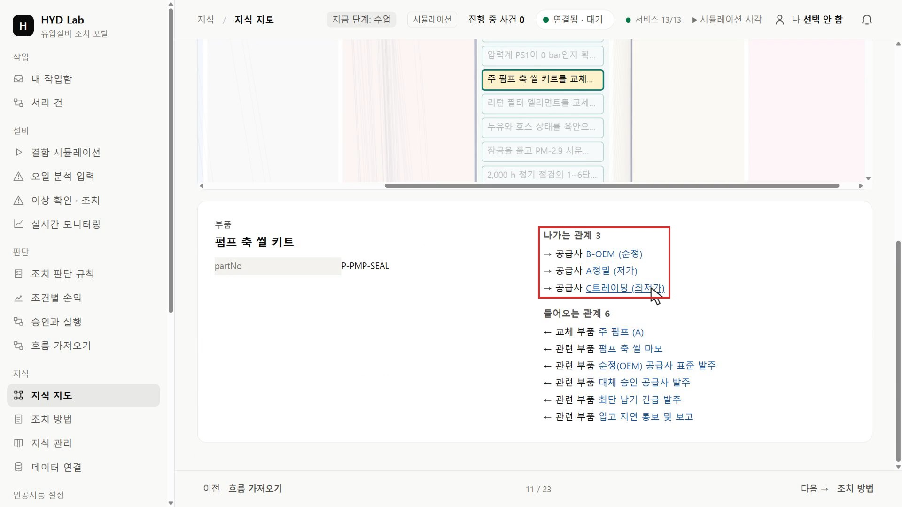
펌프 축 씰 키트 상세의 나가는 관계 공급사 셋. C트레이딩 (최저가)를 누릅니다 · 누르면 크게 보기종류는 공급사이고, avl 칸(승인 여부)이 false, 곧 승인되지 않은 공급사입니다. 씰 키트와 선으로 이어져 있어도 회사 기준으로는 살 수 없는 곳입니다. 연결이 있다는 것과 써도 된다는 것은 다릅니다.
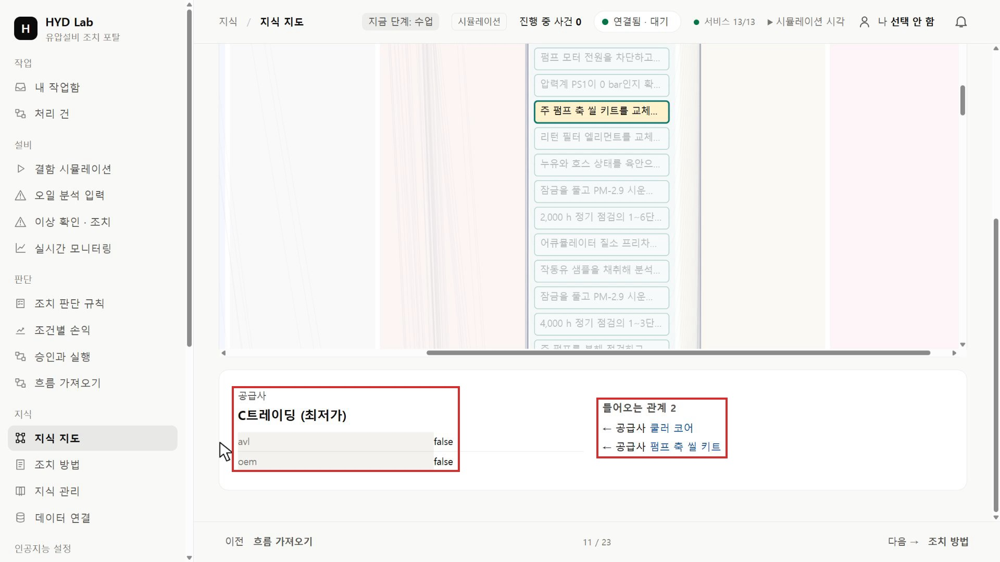
C트레이딩 (최저가) 상세: avl false · oem false · 누르면 크게 보기들어오는 관계의 펌프 축 씰 키트를 누르고 B-OEM (순정)을 누르세요. avl 칸이 true이고, oem 칸(순정 여부)도 true입니다. 승인 공급사(AVL) 절에 이어진 규칙이 읽는 칸이 이 승인 여부라서, 이 공급사는 발주 후보에 남고 승인되지 않은 공급사는 빠집니다.
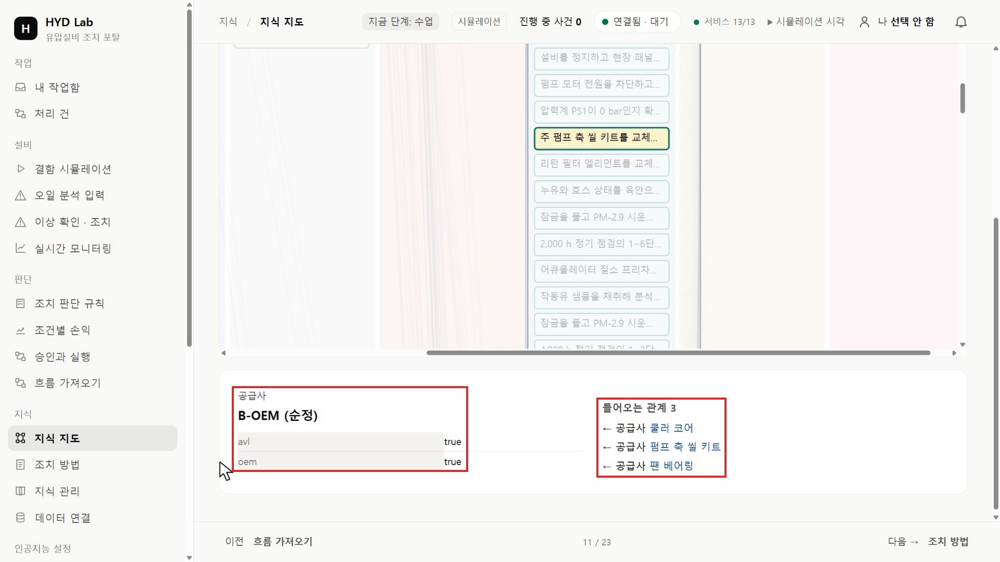
B-OEM (순정) 상세: avl true · oem true · 누르면 크게 보기승인된 공급사라도 이 상세 칸에는 단가와 납기가 없습니다. 견적은 씰 키트와 공급사를 잇는 관계에 붙어 있는데, 상세 칸은 노드의 속성만 보여 줍니다. 지금 재고도 이 칸에는 없습니다. 화면을 올려 이름 검색 칸의 글자를 지우고 씰 키트 가용을 넣으세요. 조치 방법과 규칙 칸에 입력 데이터 하나가 노랗게 표시됩니다. 누르고 상세 칸으로 내려가세요.
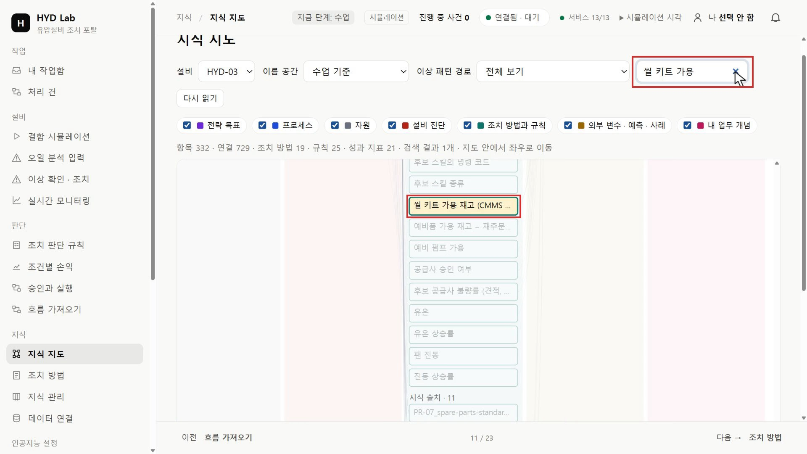
이름 검색 칸의 씰 키트 가용과 노랗게 표시된 입력 데이터 노드 · 누르면 크게 보기씰 키트 가용 재고 (CMMS 자재 키트, 개)라는 입력 데이터입니다. 지도에는 수량이 없고, 나가는 관계의 데이터 출처가 설비보전 시스템인 CMMS를 가리킵니다. 들어오는 관계에는 이 재고를 검사하는 규칙 셋과, 이 값을 필요한 입력으로 쓰는 판단 하나(규정 적합성)가 있습니다. 규칙 가운데에는 씰 키트 가용 재고가 없으면 정기 정비를 시행하지 않는다는 것도 있습니다. 규칙은 지도에 있지만, 그 규칙이 볼 수량은 판단하는 순간 CMMS에서 읽어 옵니다.
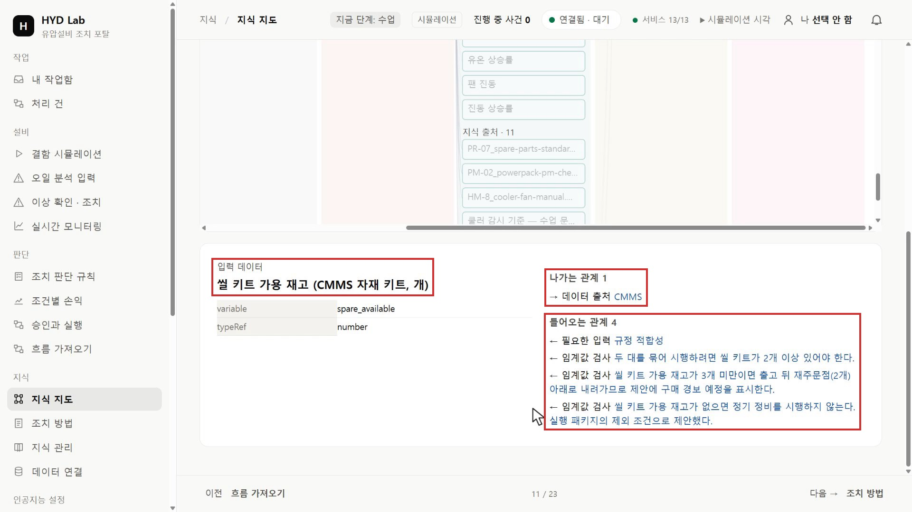
씰 키트 가용 재고 상세: 나가는 관계의 데이터 출처 CMMS와 들어오는 관계의 규칙 셋과 판단 하나 · 누르면 크게 보기확인 이 지도로는 씰 키트를 쓰는 설비(HYD-01 · HYD-02 · HYD-03)와 살 수 있는 공급사(avl true인 B-OEM (순정)), 그 근거 문서까지 짚을 수 있습니다. 지금 재고가 있는지, 단가와 납기가 맞는지는 업무 시스템에서 따로 봐야 합니다. 연결을 근거로 찾을 곳을 정하고, 확보 여부는 그 값으로 판단한다고 말할 수 있으면 이 실습을 마친 것입니다. 공급사 상세에는 들어오는 관계만 있으므로, 씰 키트로 돌아갈 때는 들어오는 관계의 펌프 축 씰 키트를 누릅니다.